A running archive of the warm-up problems we graph in class, so you can check back on any day's work.
Wed, Sept 30 — 1.3 Continuity
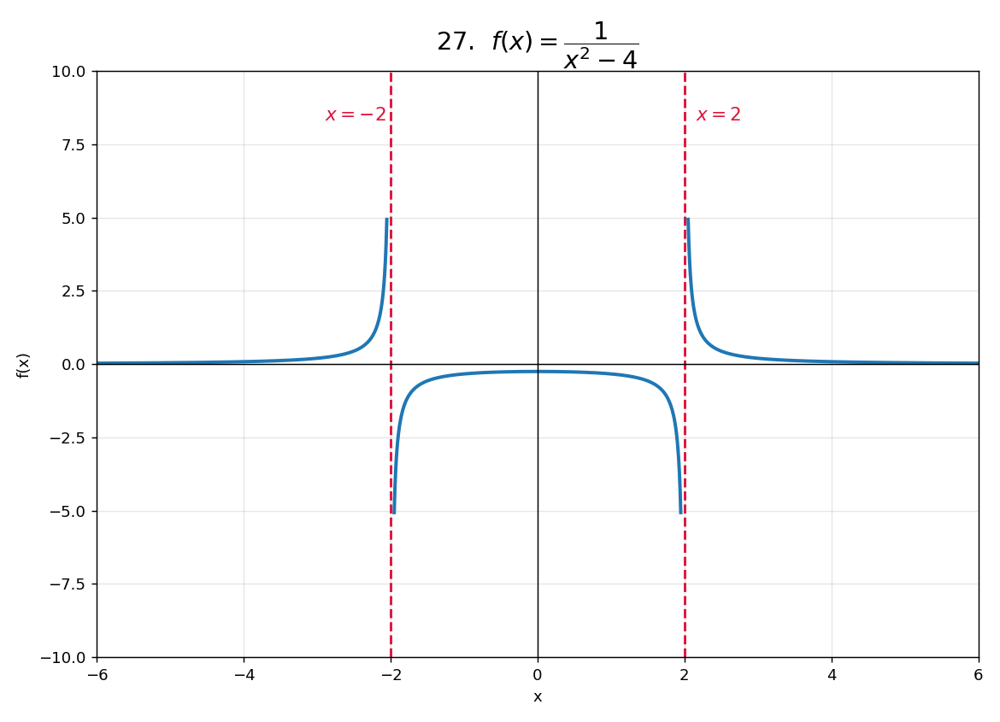
Problem 27 — f(x)=1/(x^2-4): VA at x=-2, x=2
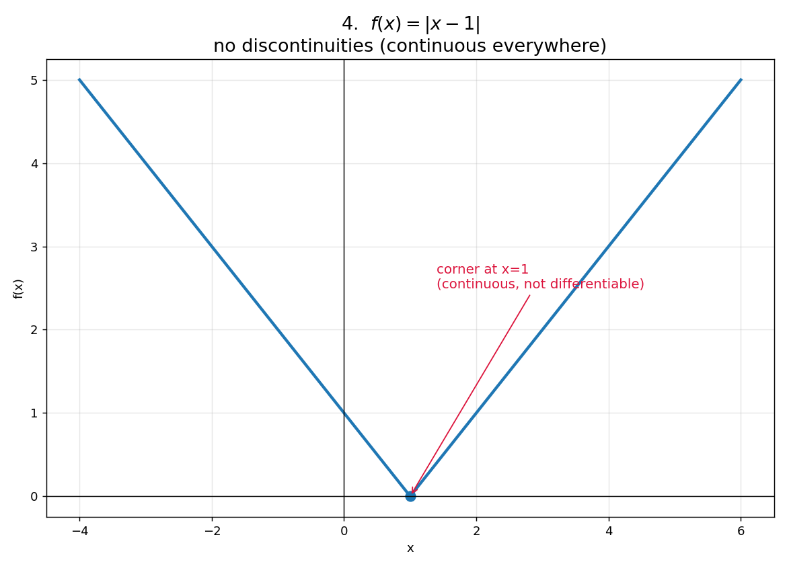
Problem 4 — f(x)=|x-1|: continuous everywhere, corner at x=1
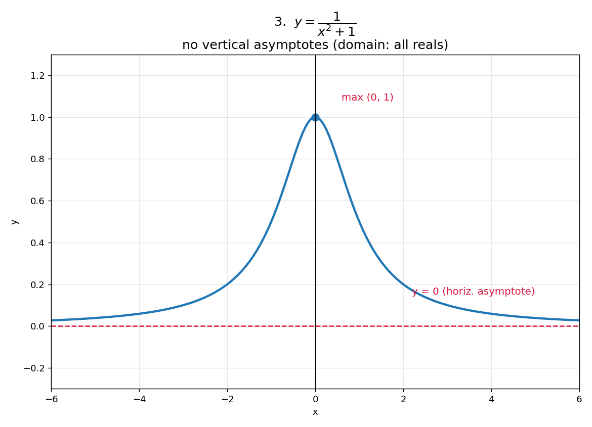
Problem 3 — y=1/(x^2+1): no VA, horiz. asymptote y=0, max (0,1)
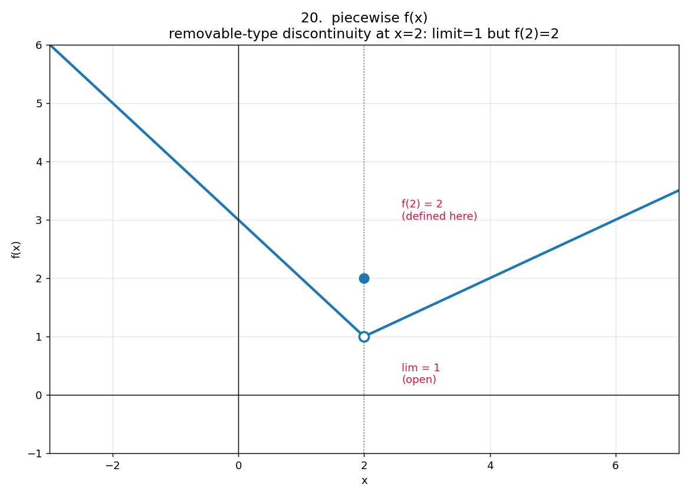
Problem 20 — piecewise f(x): disc. at x=2, lim=1 but f(2)=2
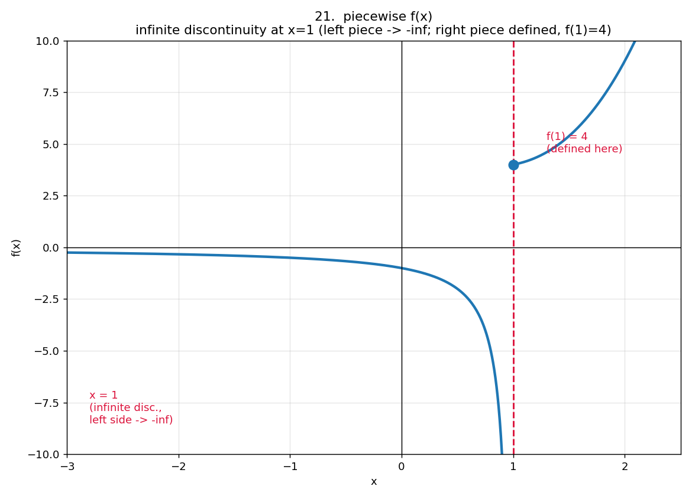
Problem 21 — piecewise f(x): infinite disc. at x=1, left piece -> -inf, f(1)=4
Tue, Sept 29 — 1.2 Limits at Infinity
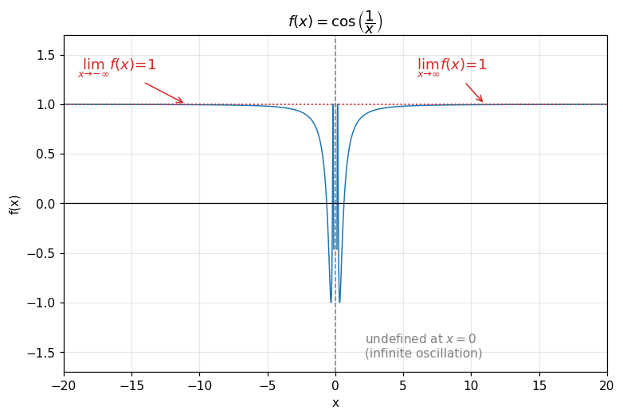
Problem 1 — f(x) = cos(1/x): lim x->inf f(x) = 1, lim x->-inf f(x) = 1
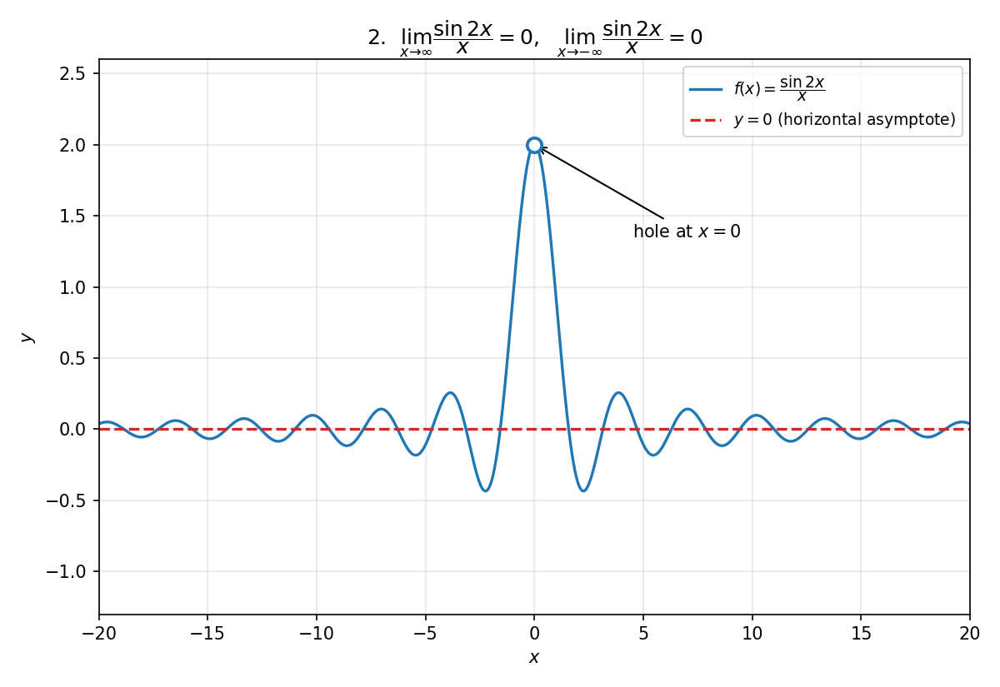
Problem 2 — f(x) = sin(2x)/x: lim x->inf f(x) = 0, lim x->-inf f(x) = 0 (horizontal asymptote); hole at x=0
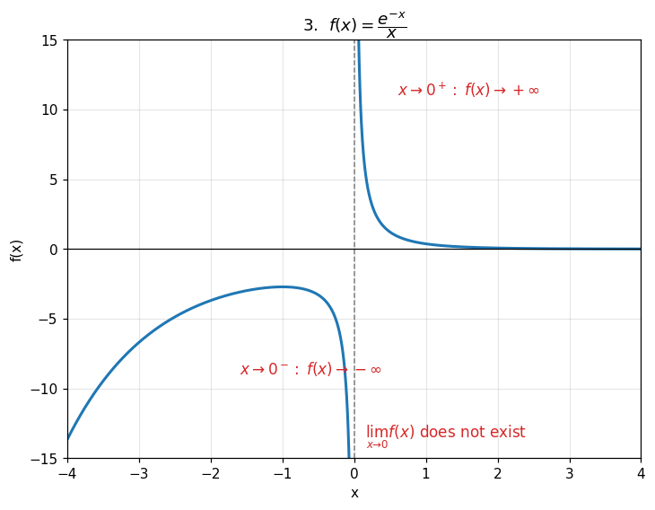
Problem 3 — f(x) = e^-x / x: vertical asymptote at x=0, limit does not exist (-inf from left, +inf from right)
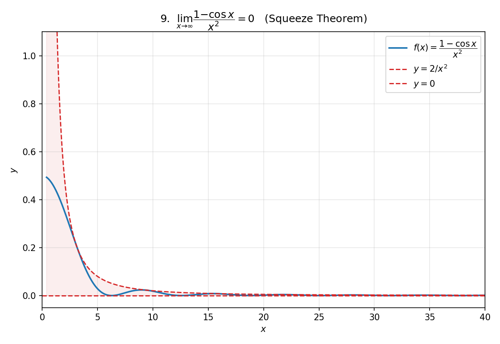
Problem 9 — lim x->inf (1-cos x)/x^2 = 0 (Squeeze Theorem)
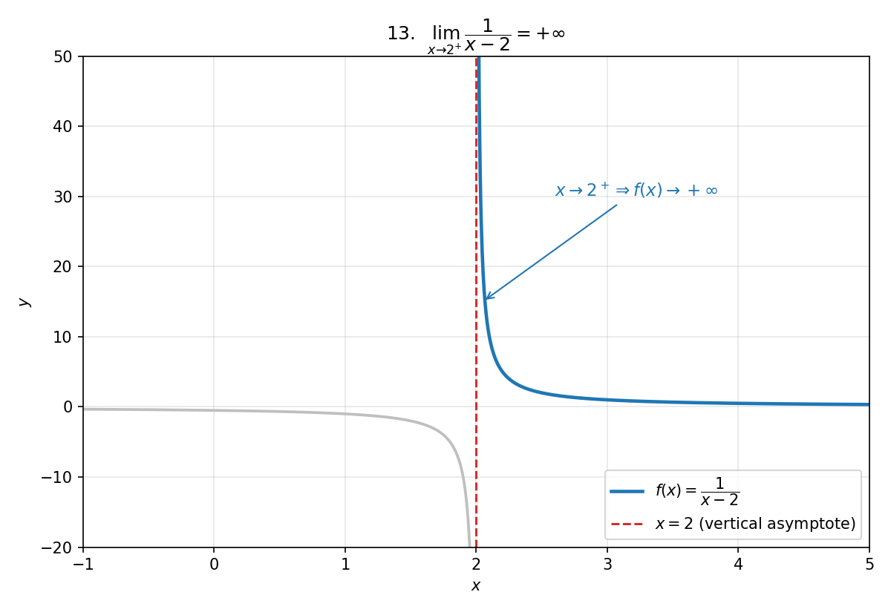
Problem 13 — lim x->2+ 1/(x-2) = +inf
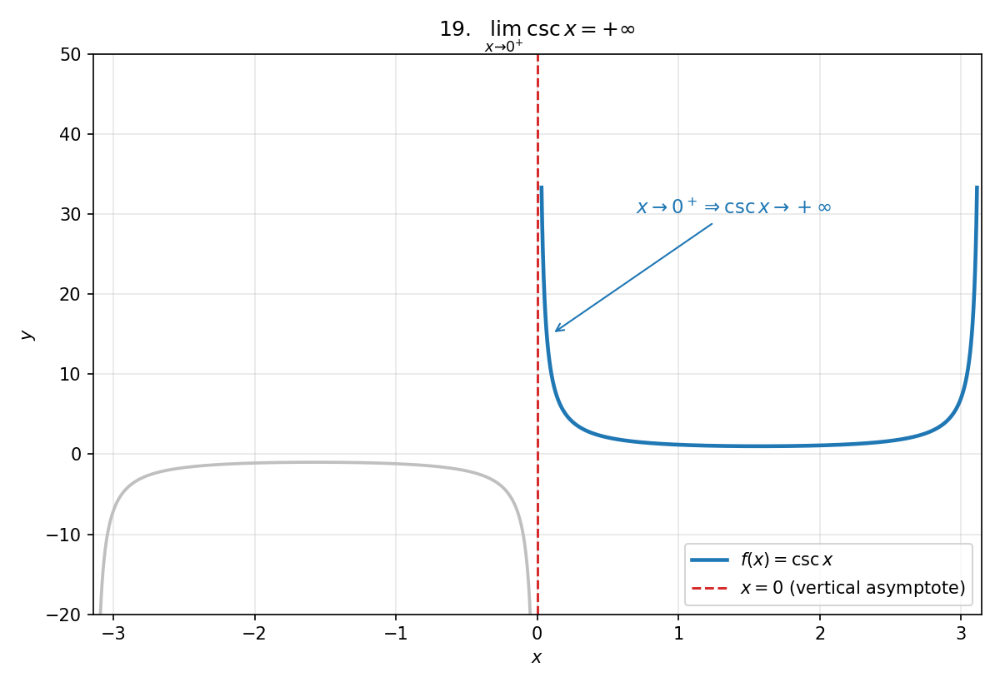
Problem 19 — lim x->0+ csc x = +inf
Fri, Sept 25 — 1.1 Rates of Change and Limits, continued practice
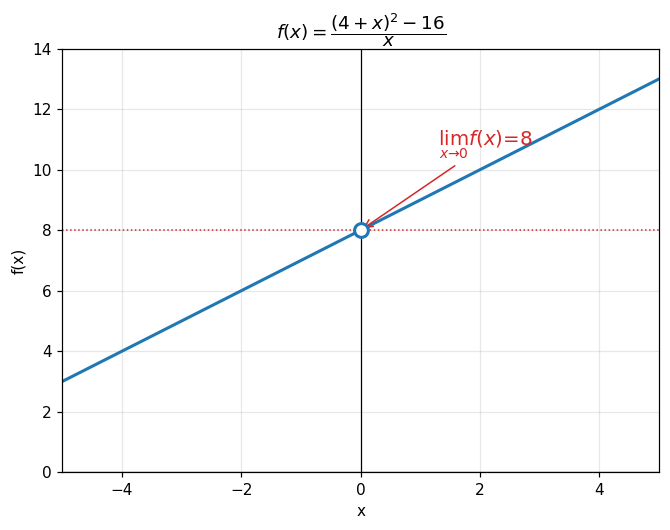
Problem 24 — lim x->0 [(4+x)^2 - 16]/x = 8
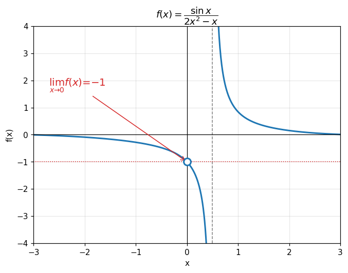
Problem 31 — lim x->0 sin(x)/(2x^2 - x) = -1